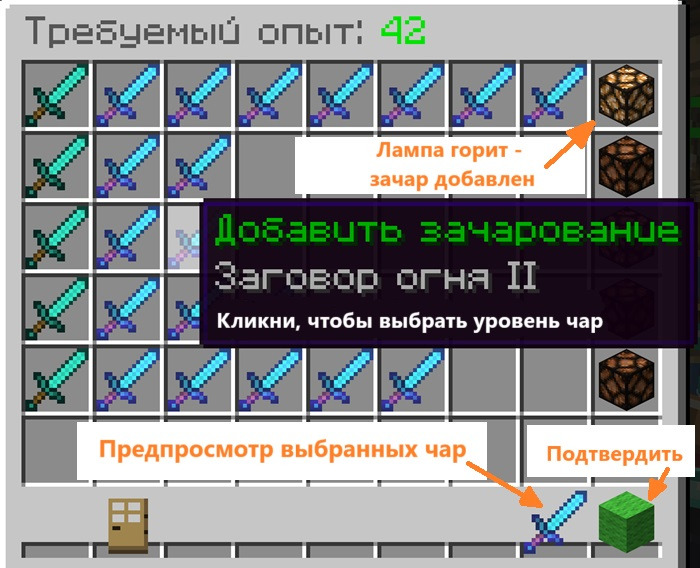

О Сервере
TwoCraft создан в середине января 2025 года. Сервер стал домом для команды единомышленников,
которых вдохновляли версии Золотой Эры майнкрафта.
На сервере TwoCraft никогда не будет вайпов - всё что вы построите, останется на сервере навсегда.
Как купить предметы?
Когда вы впервые зайдёте на сервер, на вашем балансе будет 100 монет.
Монеты - основная валюта сервера.
За монеты вы можете покупать и продавать вещи. Покупайте у Антохи на спавне (кликните по NPC или откройте магазин в /menu).
Антоха предлагает блоки, предметы для зелий, товары для новичков, пластинки и Особые Инструменты
У Антохи вы найдёте меч "Убийца Драконов" с остротой 32к, Квантовую кирку, ломающую бедрок, и другие полезные предметы
Как заработать?
Вы можете заработать монеты, продавая ресурсы игрокам или Скупщику Васяну.
Как зачаровать на 7 уровень?
Лучше всех с этим справится Чаровательница Анна и её Кот.
Для начала выберите предмет
Затем выберите уровни чар  Если у вас достаточно опыта, то Анна наложит зачарования
Как посетить интересные места сервера?
Путь вам подскажет мастер варпов, Путешественник Андре.
Где купить покушать?
Тётя Зина продаёт различные вкусняшки в своём KFC.
KFC находится на спавне, недалеко от Путешественника Андре.
Что если вы вдруг сгорите в лаве?
Если вы вдруг сгорите в лаве, умрёте от огня, или упадёте в бездну - Дворник Савелий поднимет ваши вещи.